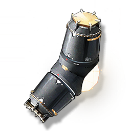

Heat Absorption Device
Missions

Equipping it can mitigate the negative effects of the Sea of Flames.
There are two types of immunity devices. Carrying all of them can greatly mitigate the damage of the Sea of Flames to people. However, if you stay in the Burning Sea for a long time, you will still accumulate damage. Please be careful not to step on the flowers.